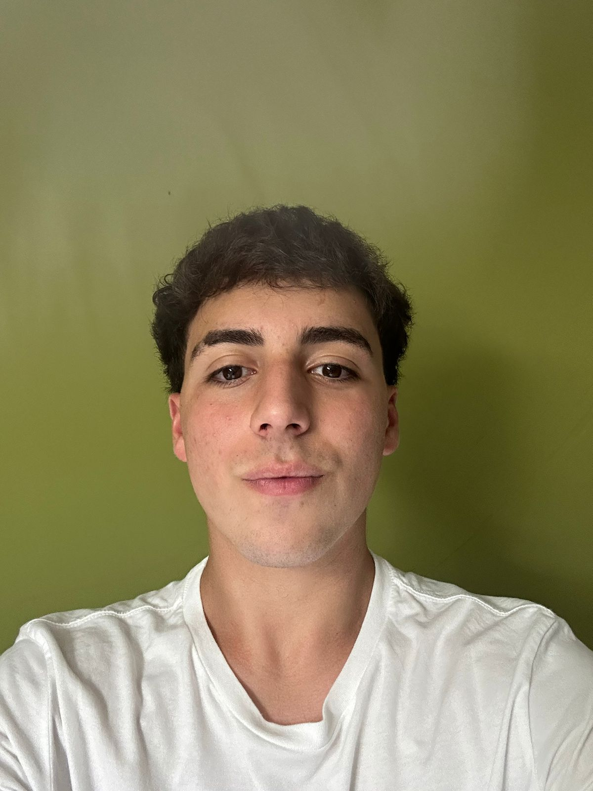

Estudiante de programación y desarrollo web de 17 años, residente en Buenos Aires, Argentina. Actualmente estoy finalizando mis estudios secundarios mientras continúo formándome en el área de desarrollo de software.
Me especializo en desarrollo Front-end, trabajando principalmente con HTML, CSS y JavaScript, enfocándome en la creación de interfaces modernas, funcionales y bien estructuradas. También ofrezco servicio de Community Manager (CM), ayudando a marcas y emprendimientos a gestionar su presencia digital y su comunicación en redes sociales. Además, cuento con conocimientos intermedios en Python y nociones de desarrollo Back-end, lo que me permite comprender el funcionamiento completo de una aplicación web.
Me interesa seguir creciendo profesionalmente en el ámbito del desarrollo web, participando en proyectos que me permitan aplicar y expandir mis conocimientos, con el objetivo de crear soluciones digitales eficientes y de alta calidad.
